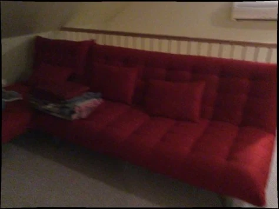
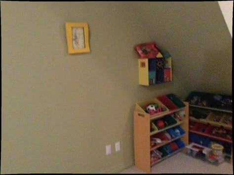
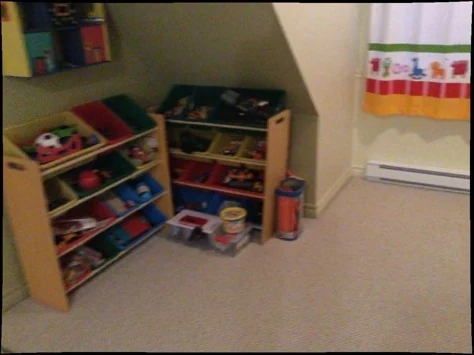
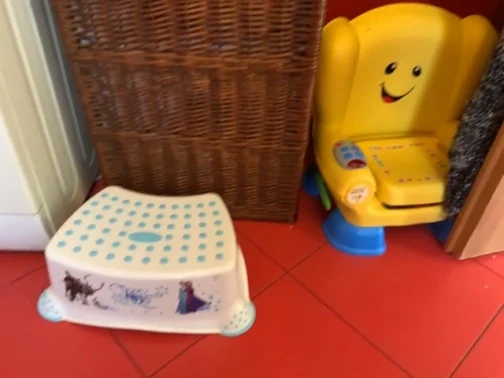
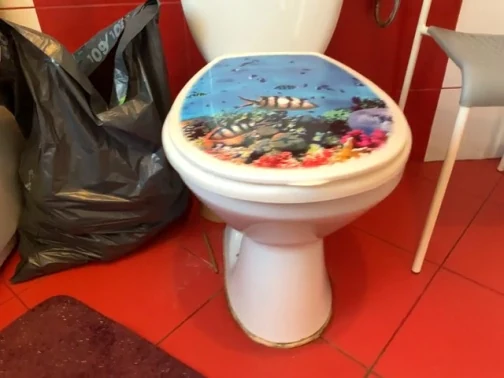
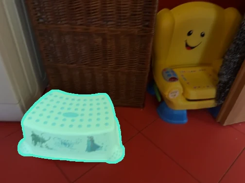

Which view supports the question?Looking without a target
Repeated observations can miss the object, observer position, or facing landmark that defines the question.
Acquire the missing premise
Weaving clues
into answers.
Seeing is a beginning.
Reasoning is making the connections.
Space-X turns images, tool outputs, and memory into a continuous evidence chain. Its agents evolve the tools and the way they use them.
How far apart are the closest surfaces?


One evolving harness. Tools, memory, and evidence working together.
Scroll to connect the dotsTHE MISSING CONNECTION
A tool can return the right output and still leave a question unanswered.
The difference is what the agent does with it.



Which view supports the question?Repeated observations can miss the object, observer position, or facing landmark that defines the question.

A mask, depth map, and distance only become evidence when their objects, sources, and reference frames agree.
Conflicting proposals need a source-based check of the disputed premise, with enough capacity left to conclude.
Evolve the whole connection. Evidence needs guide tool development.
Usable tool results guide the next observation, association, and decision.
TWO AGENTS. ONE SHARED OBJECTIVE.
Each execution builds an evidence chain.
Each iteration improves the tools and rules that make the next chain possible.
Use capabilities to solve the current question.
Improve the system around the reasoning model.
OBSERVED FAILUREUseful views disappear across context windows.
STRUCTURAL CHANGERelay observations, restore cited images, reserve review capacity.
RECORDED OUTCOMEThe sofa case reaches a supported front-left answer.
THE RESEARCH FILM
The core idea, spatial cases, and measured gains.
One connected story of self-evolution.
A narrated overview of evidence chains, dual-agent self-evolution, spatial cases, benchmark gains, and X-SFT. English subtitles are included in the video.
Open the MP4 video to watch the film.
A harness is more than a toolbox. Its components evolve together.
THE EVIDENCE LAB
Explore four recorded development cases, from the first clue to a source-grounded decision.
MEMORY THAT KEEPS THE LINKS
Five complementary memory roles preserve what was seen, what it means, what remains uncertain, and what to do next.
A source reference travels with the claim, so later reasoning can return to the evidence.
Inside the complete systemA LOOK INSIDE SPACE-X
Tools construct evidence. Memory maintains the connections.
The API reasons over what is actually supported.
SAME MODEL. NEW POSSIBILITIES.
Model aloneSpace-XBenchmark scores · labeled zoomed axes
THE BIGGEST LEAPS
SELF-EVOLUTION, MADE VISIBLE
Follow the tools, skills, memory and evidence links as Space-X takes shape.
Combine capabilities, restore source evidence and close the reasoning chain.
575 optimization steps. Ten measured checkpoints.
WHAT THE EXPERIMENTS TEACH US
Better tools. Connected memory. A harness that adapts.
Jointly evolving tools and evidence rules beats changing either side alone.
Explicit links align evidence. Role-specific memory carries it into the next decision.
Let a new model improve the inherited harness, using the original development data.
The improvement is in the coordination.
Tools, memory and decisions evolve around one continuous evidence chain.
THE EXTENDED CASE ATLAS
Pick a scene. Follow the evidence. See what changes.
Explore a different angle.
Try “memory”, “depth”, “source”, or search across all themes.
FROM SEEING TO SOLVING
Space-X: Self-Evolving Spatial Agents Weaving Clues into Evidence Chains
Explore the evidence